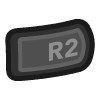

First, make sure these steps are permissible in your locale. RetroArch and LibRetro do not share any copyrighted content.
A new work-in-progress Tomb Raider game engine ported to libretro.
This game engine recreation seeks to allow you to play the original Tomb Raider engine games, from 1 all the way up to 5.
OpenLara V1 Tomb Raider 1 is fully playable.
The nice thing about OpenLara is that, while staying true to the original look and feel of the original, it also adds some enhancements to it that manages to make the boxy old-school Tomb Raider games look a bit less archaic. Some examples include :
The OpenLara core has been authored by
The OpenLara core is licensed under
A summary of the licenses behind RetroArch and its cores can be found here.
This core requires that you use OpenGL as the video driver. Go to Settings -> Driver. If ‘video driver’ is set to ‘vulkan’, switch it back to ‘gl’, and then restart.
!!! attention There is currently no ‘working’ macOS version available due to the OpenGL requirement.
Content that can be loaded by the OpenLara core have the following file extensions:
RetroArch dat that is associated with the OpenLara core:
TR1 is officially supported while 2 or 3 is not. You can still load the levels of 2 or 3 and play them with the proper file scheme. You can download the demo from Online Updater > Content Downloader > Tomb Raider and test Level 2. You can also experience the OpenLara's features in the demo. Apart from that, you can buy it here on GOG or here on Steam. Tomb Raider has differences between ports. The Steam and GOG version do not install the DATA and FMV folders directly into the directory. In Console versions, these files are in the image file.
Not all audio files are available in the Steam/GOG distribution. In this case, you cannot hear some audio streams. For example, in the GYM level, you cannot hear Lara's instructions, but you can hear the sounds of walking, jumping and taking damage.
First, make sure these steps are permissible in your locale RetroArch or LibRetro do not share copyrighted content.
When you get Tomb Raider on digital platforms, you will see GAME.GOG(game file), GAME.DAT, dosbox.exe and configuration file of dosbox inside the folder.
??? note "Files inside Tomb Raider 1 from Steam"

GOG files store audio samples in Drumagog format. This format was developed by WaveMachine Labs for a software plugin that offers access to acoustic drums samples. GOG files are associated with VST technology and are compatible with any software that supports it. GOG format was originally developed in 1999 and is regularly updated.
Open the dosbox.conf file with a text editing file. Scroll down to until [autoexec], lines in this section will be run at startup.
mount C .
imgmount d ".\game.dat" -t iso -fs iso
xcopy D:\DATA\ C:\DATA\
xcopy D:\FMV\ C:\FMV\
When you paste the code above, dosbox.exe will boot the image and copy the DATA and FMV files in it to the local machine each time it is opened. The computer version does not contain most audio files. For example, when you export existing audio files, you cannot hear Lara's instructions at the GYM level.
??? note "Folders from Tomb Raider 1 image"

You must convert the audio files in the main folder of TR1 to .ogg format. You can do this with the small FFmpeg script below. Apart from that, you can use console audio files with PC port.
??? note "Converting to OGG"
for f in ./*.mp3; do ffmpeg -i "$f" -c:a libvorbis -q:a 4 "${f/%mp3/ogg}"; done
This will convert files from mp3 to ogg
The PC Port also missing title and loading images, you can get them from the console version. Place the DELDATA folder from the Console port into the main TR1 directory.
??? note "Missing Title Screen / Title Screen from Console"


jPSXdec is a modern, cross-platform PlayStation 1 audio/video converter. Check their documentation to understand how to use it.
To achieve a continuous game that loads from one level to the next you can load directly from CD or preferably setup the content folder like this:
| Folder | File Type(s) | Description |
|---|---|---|
| audio/1/ | track_XX.ogg or XXX.ogg | X represents a number |
| audio/2/ | track_XX.ogg and MAIN.SFX | Both tracks and MAIN.SFX are required |
| audio/3/ | track_XX.ogg and MAIN.SFX | Both tracks and MAIN.SFX are required |
| level/1/ | *.PNG and *.PHD or *.PSX or *.SAT | Load-screens and levels |
| level/2/ | *.PNG and *.TR2 or *.PSX | Load-screens and levels |
| level/3/ | *.PNG and *.TR2 or *.PSX | Load-screens and levels |
| video/1/ | *.RPL or *.FMV | Video cut-scenes |
| video/2/ | *.RPL or *.FMV | Video cut-scenes |
| video/3/ | *.RPL or *.FMV | Video cut-scenes |
!!! note if you load from CD you won't have soundtrack in TR1
Frontend-level settings or features that the OpenLara core respects.
| Feature | Supported |
|---|---|
| Restart | ✕ |
| Saves | ✔ |
| States | ✕ |
| Rewind | ✕ |
| Netplay | ✕ |
| Core Options | ✔ |
| RetroAchievements | ✕ |
| RetroArch Cheats | ✕ |
| Native Cheats | ✕ |
| Controls | ✔ |
| Remapping | ✔ |
| Multi-Mouse | ✕ |
| Rumble | ✕ |
| Sensors | ✕ |
| Camera | ✕ |
| Location | ✕ |
| Subsystem | ✕ |
| Softpatching | ✕ |
| Disk Control | ✕ |
| Username | ✕ |
| Language | ✕ |
| Crop Overscan | ✕ |
| LEDs | ✕ |
With OpenLara, you can experience Tomb Raider like you've never played before. You can try it through the eyes of Lara Croft with the primary person camera, for this you can switch to this mode by pressing L1 + A and exit this mode with the same combination. FPS also available in 2-Player Mode.
??? note "FPS mode"

You can include your friend with whom you want to pass TR levels together. Press Start from Second Controller in order to go 2-Payer Mode.
??? note "2-Player Mode"

The OpenLara core's library name is 'OpenLara'
The OpenLara core saves/loads to/from these directories.
| File | Description |
|---|---|
| system/openlara/*.xsh | Shader files |
| saves/openlara/savegame.dat | Savegame |
| saves/openlara/settings | Settings |
The OpenLara core has the following option(s) that can be tweaked from the core options menu. The default setting is bolded.
Settings with (Restart) means that core has to be closed for the new setting to be applied on next launch.
Framerate (restart) [openlara_framerate] (60fps|70fps|72fps|75fps|90fps|100fps|119fps|120fps| 144fps|240fps|244fps|15fps|30fps)
Modify framerate. Requires a restart.
Internal resolution (restart) [openlara_resolution] (320x240|360x480|480x272|512x384|512x512|640x240| 640x448|640x480|720x576|800x600|960x720|1024x768| 1024x1024|1280x720|1280x960|1600x1200|1920x1080| 1920x1440|1920x1600|2048x2048|2560x1440| 3840x2160|7680x4320|15360x8640|16000x9000)
Modify the internal resolution. Requires a restart.
??? note "Internal resolution - 320x240"

??? note "Internal resolution - 1920x1080"

| RetroPad Inputs | User 1 input descriptors |
|---|---|
 |
Action (Shoot/grab) |
 |
Jump |
 |
Inventory |
 |
Start |
 |
Up |
 |
Down |
 |
Left |
 |
Right |
 |
Roll |
 |
Draw weapon |
 |
Walk (when holding) |
 |
Duck/Crouch (TR3 and up) |
|  | Dash (TR3 and up) |